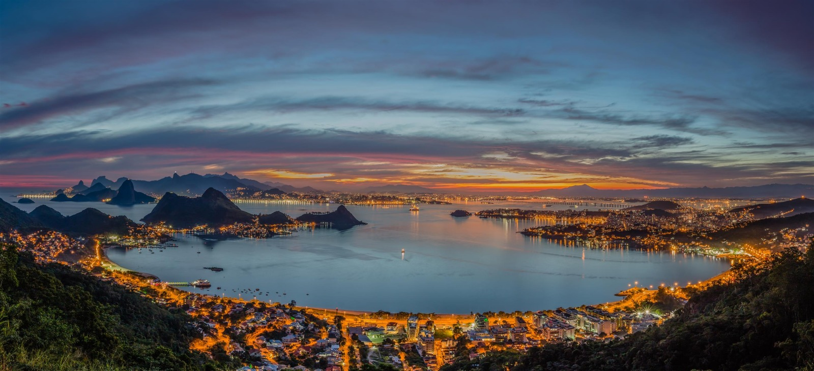
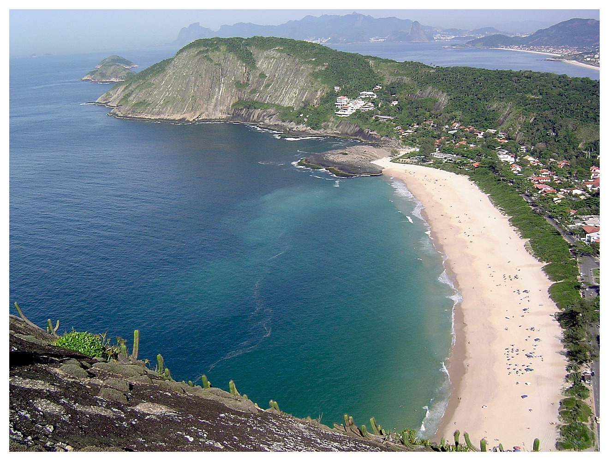
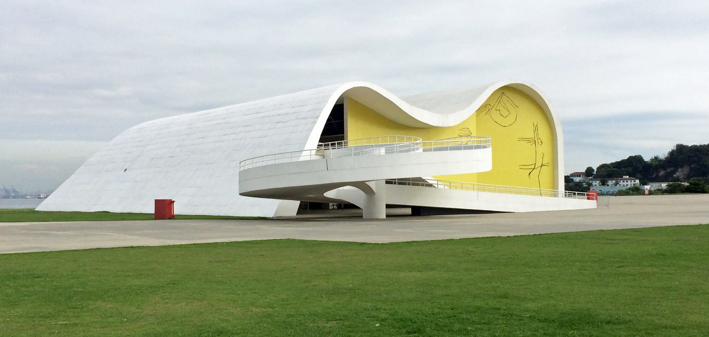
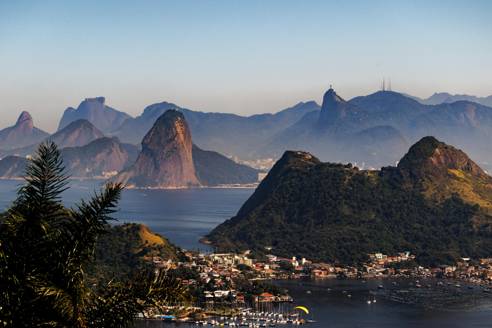
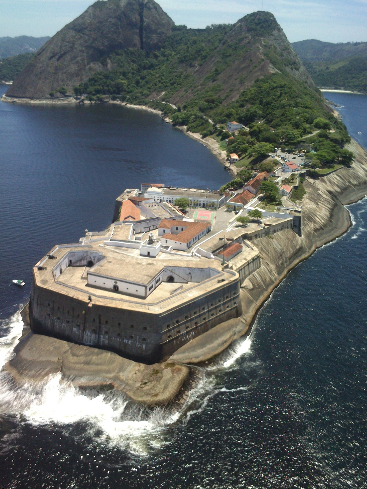
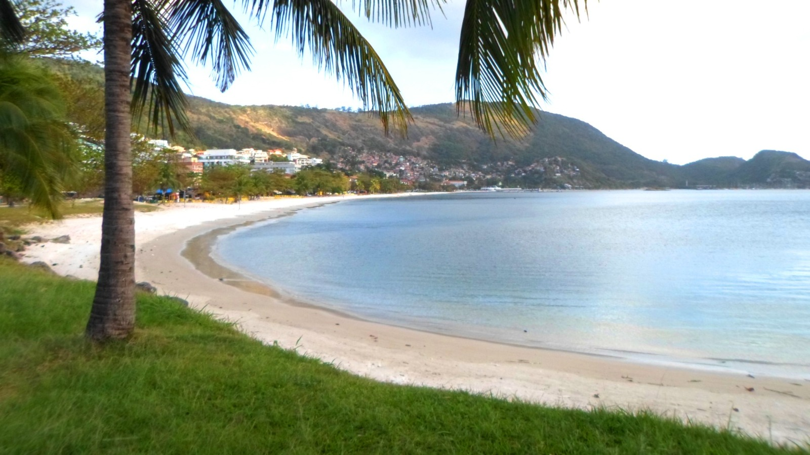

Multimédia
Nesta página encontra conteúdos multimédia de Niterói.
Fotografias | Vídeo | Poesia
Fotografias








Vídeo
Poesia
Niterói, cidade à beira-mar,
teus morros vigiam o céu a clarear.
Do MAC ao Forte, memórias a viver,
praias e sonhos que o sol vem trazer.